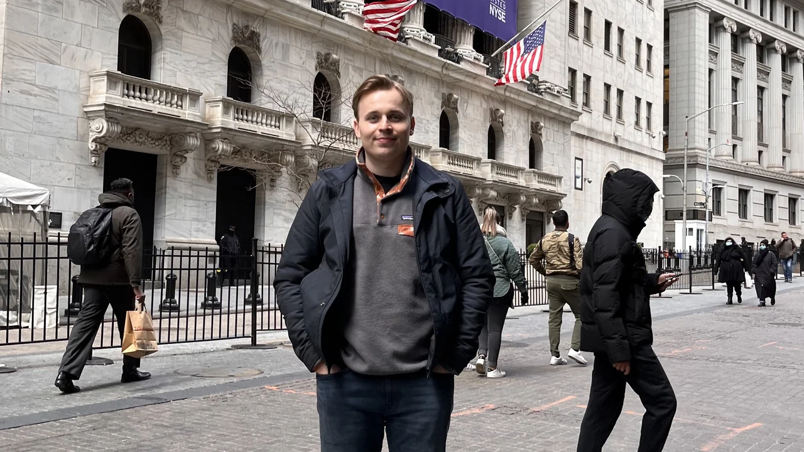
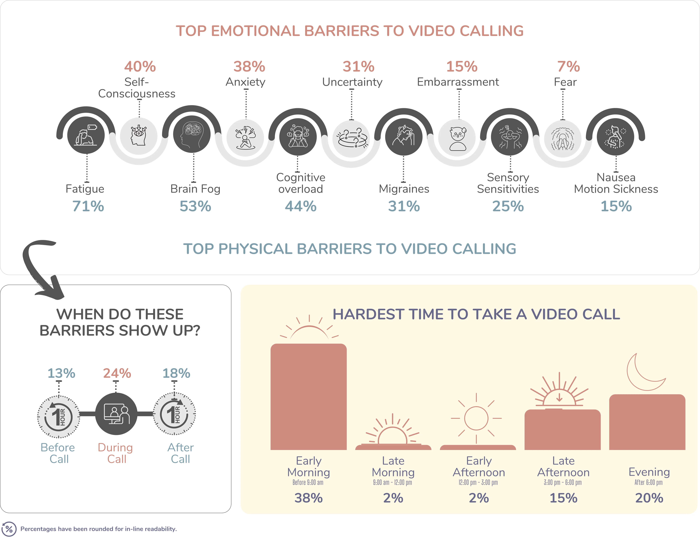
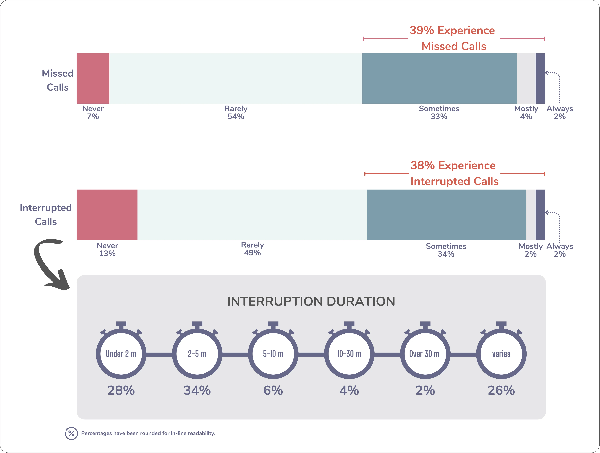
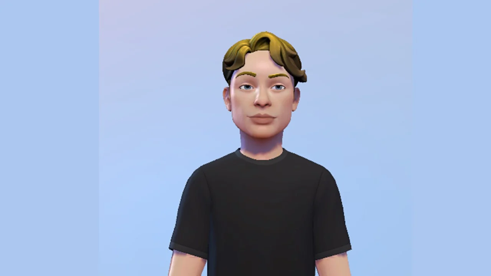
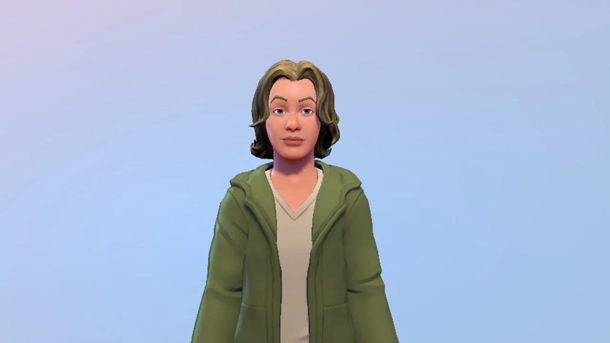
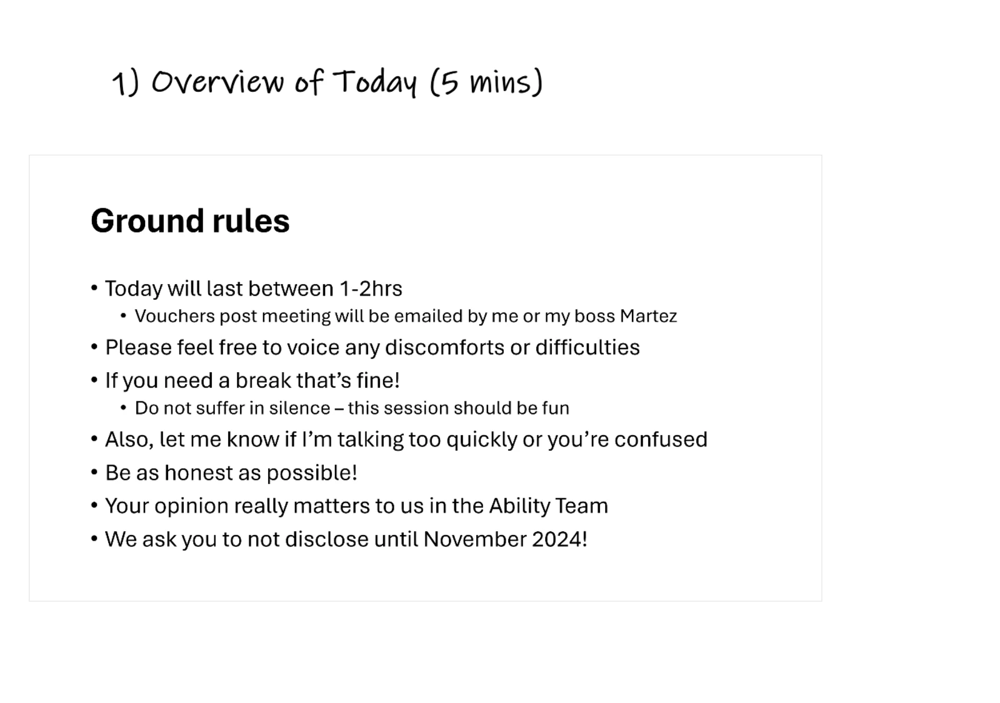
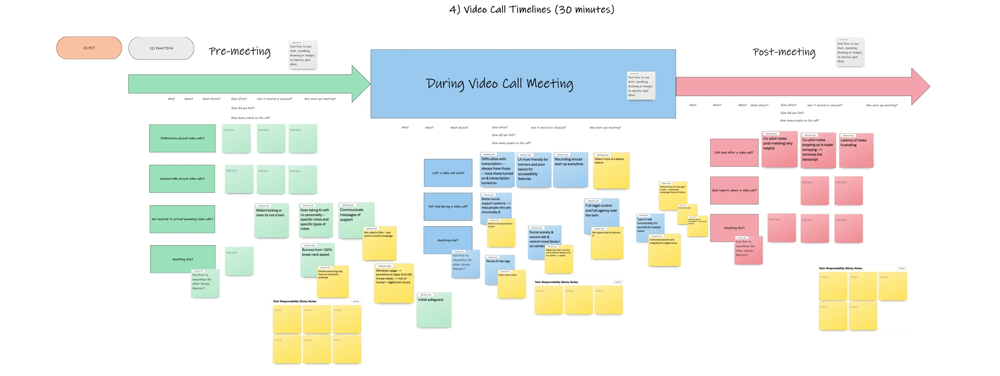
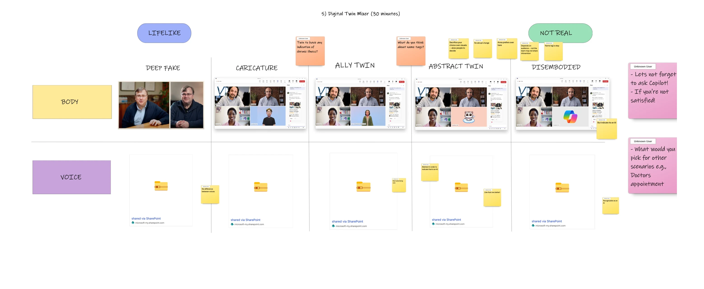

LifelikeMy face and voice

During a research internship with the Microsoft Research Ability Team, I investigated how AI meeting agents might support chronically ill people when video calls are essential to work, healthcare and social life, but participating can intensify fatigue, brain fog, migraines, anxiety and pain.
The internship unfolded as two connected studies. I first documented how chronically ill people used and adapted existing video-calling tools. I then used those findings to co-design meeting agents—including digital twins—that could prepare for calls, support participation and help people catch up, without pretending to be the person or eroding their right to rest.
I designed and ran an accessible Microsoft Forms survey with adults living with chronic illness in the United States. Its 47 questions examined participants’ video-calling routines, facilitators, barriers and imagined “dream features”. To reduce fatigue and cognitive load, I prioritised multiple-choice questions, made written responses optional, previewed the length of each section and explicitly encouraged participants to take breaks.
Recruitment through disability and chronic-illness organisations produced a final sample of 55 participants (n = 55), covering 128 self-reported illnesses and health conditions. I combined descriptive statistics with inductive thematic analysis of 401 written responses, then refined the themes collaboratively with the paper team.

Video calling was essential access infrastructure for many respondents. 78% used it every day, relying on calls for employment, healthcare, therapy and social connection. Camera and microphone controls, captions, transcripts and recordings helped people adapt around fluctuating symptoms. At the same time, 71% reported fatigue, while 39% sometimes-to-always missed calls and 38% interrupted calls because of health needs. Respondents described the hidden work of masking pain, explaining an off-camera presence, managing these unpredictable interruptions and recovering after a call.

The findings showed that accessibility is produced socially as well as technically. Supportive collaborators, accepted camera-off practices, permission to step away and reliable ways to catch up mattered alongside interface features. Respondents asked for better captions and transcripts, constructive meeting recaps, easier turn-taking, planned breaks and personalised interfaces that changed gradually and predictably.
This study became the CHI 2025 paper “I use video calling in all areas of my life”: Understanding the Video Calling Experiences of Chronically Ill People, with Erin Beneteau, Edward Cutrell, Denae Ford, Sasa Junuzovic, Ann Paradiso, John Tang and Martez E. Mott.
The CHI 2025 research video summarises the survey, findings and design directions.
The survey established the problem; the second study explored the potential of AI meeting agents—including digital twins—to support accessible video calls. I ran eight individual remote co-design workshops with eight people living with chronic illness (n = 8). Each session moved from grounding and critique, to mapping support across a meeting, and finally to designing how an agent might represent someone.
To make that speculative design space concrete, I introduced five possible forms for a meeting agent. They ranged from a lifelike copy of the participant to a clearly disembodied tool. These were prompts for discussion—not proposed solutions—and helped participants separate what an agent could do from how it might look, sound and identify itself.



I began by explaining the session, compensation and confidentiality, then established accessible ground rules. Participants were explicitly invited to pause, take a break, flag discomfort, ask me to slow down or say when something was unclear. This made fluctuating access needs part of the workshop rather than an interruption to it.

A short Olympics prompt and a tic-tac-toe activity gave participants a low-pressure way to practise using sticky notes and moving around the shared whiteboard. It also gave me an early opportunity to notice interaction difficulties before asking participants to discuss chronic illness, work and AI.

Participants watched and annotated examples already in public discussion, including Reid Hoffman’s AI-generated twin and Microsoft’s Ditto prototype. They identified what felt useful, unconvincing or harmful. Esther’s board became especially dense around accuracy, security, control and agency—including whether other people should retain access to someone through their twin.

Participants then placed their own experiences on a before–during–after timeline, noting barriers, emotional or physical effects and possible responsibilities for an agent. This shifted the conversation away from a single futuristic stand-in and towards specific jobs: preparing context, making a live call easier to follow, recording decisions and helping someone catch up after stepping away.

Finally, the digital twin mixer returned to the five forms shown at the start. Participants compared and recombined their bodies and voices, then added constraints for different contexts. This made representation itself available for critique: should an agent look and sound like its user, clearly announce that it is artificial, or avoid impersonation altogether?

Participants did not converge on one preferred appearance. Suitability changed with the meeting, relationship and task. Across the workshops, four more consequential tensions recurred.
Participant quotations use first names only and have been lightly edited for transcription clarity.
The clearest opportunities were bounded and assistive: preparing talking points, taking notes, tracking decisions and catching up after a break. These functions reduced meeting labour without requiring an agent to impersonate its user or make decisions independently.
“I didn’t really miss the meetings because I can go back later and read the recap and action items.”
Walter
Participants distinguished choosing not to attend from granting permanent access to their knowledge. An agent that remained available during sick leave could undermine the very boundary an accommodation was intended to protect.
“It’s disconcerting to think that my choice—my agency—of prioritising my mental health could be removed by having that team still have access to my knowledge without my ongoing consent.”
Esther
Participants wanted colleagues to understand when an agent was speaking and whose interests it represented. A comfortable human-like voice could be useful, but its words, permissions and artificial status needed to remain explicit.
“I like human intonation in the voice, but I want the content that it says to be very clear that it’s artificial.”
Kirsten
Several scenarios originated in overloaded calendars, unclear agendas and pressure to attend. Participants questioned whether digital twins would solve those conditions or merely make it easier to schedule more meetings and expect more simultaneous participation.
“We’re trying to fix cultural problems with technology, when it really just adds to the complexity and nuances.”
Joe
Research status: this co-design study was not published or developed into a product. The account above is drawn from the retained research protocol, workshop materials and complete transcripts from eight sessions, and presents recurring design tensions rather than evaluated product claims.